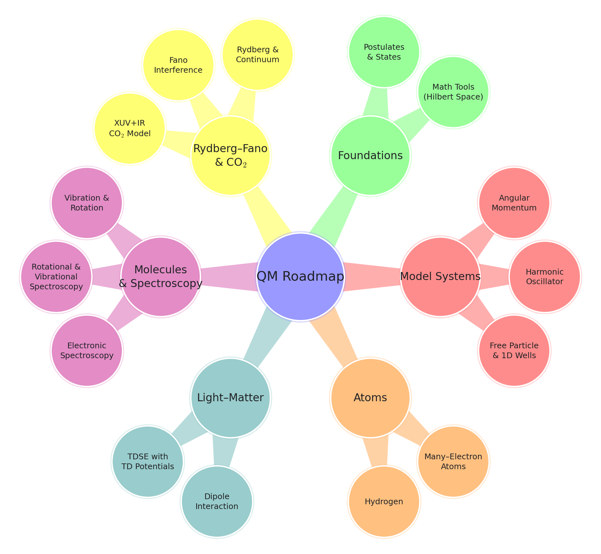

Guided Research in Quantum Mechanics and Spectroscopy
Direct Method
Quantum Mechanics Roadmap
Quantum mechanics, atomic structure, and molecular spectroscopy are presented in these notes with a single guiding goal: to take the reader from basic model systems to a time–dependent Rydberg–Fano description of XUV+IR dynamics in CO\(_2\). This page summarizes the main learning targets and the logical flow of chapters.
Learning outcomes. After completing this part of the book, the reader should be able to:
work comfortably with Hilbert–space methods, Dirac notation, and operators;
solve the Schrödinger equation for simple one–dimensional and central–potential systems and interpret their spectra;
describe orbital and spin angular momentum at the level needed for atomic orbitals and molecular rotation;
explain the structure of hydrogen and many–electron atoms using quantum numbers and the Pauli principle;
use semiclassical light–matter interaction (time–dependent potentials, dipole approximation) to describe transitions and selection rules;
apply harmonic–oscillator and rigid–rotor models to vibrational and rotational motion and relate them to observed spectra;
understand the essentials of electronic spectroscopy and the role of potential–energy curves and Franck–Condon factors;
distinguish between bound, Rydberg, and continuum states in molecules and apply the Fano formalism to discrete–continuum coupling;
follow the derivation and physical meaning of time–dependent Rydberg–Fano models for molecular systems such as CO\(_2\).
Notation conventions used in these notes. To keep formulas consistent from Chapter 1 to Chapter 11, we use:
\(\ket{n}\), \(E_n\) for generic stationary states and energies of a time-independent Hamiltonian;
\(a,b\) for electronic-state labels, \(\mathcal{E}_a(\vec R)\) for electronic energy surfaces, and \(V_a(\vec R)\) for the full Born–Oppenheimer potential including nuclear repulsion;
\(v\) for vibrational quantum number, \(J\) for rotational quantum number, \(M_J\) for its space-fixed projection, and \(\Lambda\) for the molecular-axis projection of electronic orbital angular momentum;
molecular basis states are written as \(\ket{a,v,J,M_J}\), with coordinate-space functions used as representations of kets (for example, \(\Psi(\vec r,\vec R)=\braket{\vec r,\vec R}{\Psi}\));
\(\varepsilon\) for continuum-electron kinetic energy, \(\omega_{fi}=(E_f-E_i)/\hbar\) for transition angular frequencies, and \(\tilde\nu\) (cm\(^{-1}\)) for spectroscopic wavenumbers.
Conceptual roadmap. The chapters are organized as follows:
Ch. 1: Foundations. Mathematical tools (Hilbert space, kets and bras, operators, representations) and the postulates of quantum mechanics.
Ch. 2: One-dimensional model systems. Free particle, wells, tunnelling, and harmonic oscillator.
Ch. 3: Angular momentum and central potentials. Operator algebra, spherical harmonics, parity, and selection rules.
Ch. 4: Hydrogen atom. Exact Coulomb problem, hydrogenic levels and orbitals; prototype for Rydberg states.
Ch. 5: Many-electron atoms. Spin, antisymmetry, Pauli principle, qualitative structure of many–electron atoms.
Ch. 6: Time–dependent potentials and light–matter interaction. TDSE with time–dependent Hamiltonians, dipole interaction with classical fields, and time–dependent perturbation theory.
Ch. 7: Molecular structure, vibration, and rotation. Born–Oppenheimer separation, molecular orbitals, normal modes, and molecular energy scales.
Ch. 8: Rotational and vibrational spectroscopy. Selection rules, infrared and Raman activity, and rovibrational band structure.
Ch. 9: Electronic spectroscopy. Electronic excitation, potential–energy curves, Franck–Condon principle, and basic radiative processes.
Ch. 10: Rydberg and continuum states; Fano resonances. Discrete–continuum coupling, Fano line shapes, and series behavior.
Ch. 11: Time–dependent Rydberg–Fano dynamics in CO\(_2\). Coupled-channel equations for XUV+IR-driven molecular dynamics and the interpretation of time-domain observables.

This visual map is meant to be a quick reference: whenever a later chapter feels abstract, the reader can return here to see how each topic fits into the overall progression from basic quantum mechanics to Rydberg–Fano dynamics in CO\(_2\).
Preface
Quantum mechanics stands at the core of modern physics. It provides the framework through which we understand atoms, molecules, light–matter interaction, and the structure of matter on the smallest scales. Yet the theory is not merely a collection of equations; it is a way of thinking about nature in which probability, superposition, and interference play central roles.
These notes were developed to guide students from the foundations of quantum theory to the threshold of contemporary research, with a particular focus on Rydberg states, continuum coupling, and Fano interference. The long–term goal is concrete: to take the reader from basic model systems, through atomic and molecular structure and spectroscopy, to a time–dependent Rydberg–Fano description of XUV+IR dynamics in CO\(_2\).
The philosophy of the text is deliberately minimal. We do not attempt to reproduce a complete quantum–mechanics curriculum. Instead, we follow a focused path that introduces only those concepts and techniques that are needed later in the research–oriented chapters. Whenever possible, derivations are streamlined and unnecessary generality is avoided; the emphasis is on clarity, physical interpretation, and readiness to read and use the underlying research articles.
In broad terms, the material is organized as follows. The opening chapters introduce the conceptual and mathematical structure of the theory: quantum states in Hilbert space, observables as operators, the meaning of probability amplitudes, and the formulation of time evolution. We then move through the simplest model systems—the free particle, one–dimensional wells and barriers, the harmonic oscillator, and central potentials—to build intuition for discrete spectra and continuum states within a unified framework. Subsequent chapters treat real atoms, first the hydrogen atom and then many–electron systems, including spin, antisymmetry, and the Pauli principle. A dedicated chapter on time–dependent potentials and semiclassical light–matter interaction provides the bridge from stationary states to driven dynamics.
After this foundation is in place, the focus shifts to molecules: quantum models for vibrational and rotational motion, together with rotational, vibrational, and electronic spectroscopy, are developed at a level sufficient to interpret key experimental observables. The final chapters introduce Rydberg and continuum states in molecules, the Fano formalism for discrete–continuum coupling, and a concrete application to XUV+IR–driven Rydberg dynamics in CO\(_2\).
Throughout these notes, the goal is clarity: to explain not only how the formalism works, but why each step matters physically. Wave functions, operators, and amplitudes are presented side by side with their interpretation in experiments and simulations. Derivations are shown in detail where they illuminate key ideas, and theorems, definitions, and examples are highlighted to support mastery of the material. The aim is to build intuition without sacrificing rigor, and to connect the quantum formalism to the dynamical phenomena that students will encounter in modern atomic, molecular, and optical physics.
A separate roadmap page, placed immediately after this preface, provides a concise overview of the learning outcomes and a visual map of how the chapters are connected. Readers are encouraged to refer back to that roadmap whenever they wish to see how a particular topic fits into the overall progression from basic quantum mechanics to Rydberg–Fano dynamics.
These notes are written with advanced undergraduates and beginning graduate students in mind, particularly those who have completed a course in mathematical methods in physics and are interested in connecting quantum–mechanical formalism with current research topics. The later chapters may also serve as a bridge for students transitioning from a standard quantum–mechanics syllabus to the specialized literature on ultrafast and strong–field phenomena.
Quantum mechanics rewards persistence, curiosity, and a willingness to think in new ways. It is my hope that these notes will serve as a clear and supportive guide—both for learning the foundations and for taking the first steps into the rich landscape of quantum dynamics and interference.
Erfan Saydanzad Department of Physics Kennesaw State University